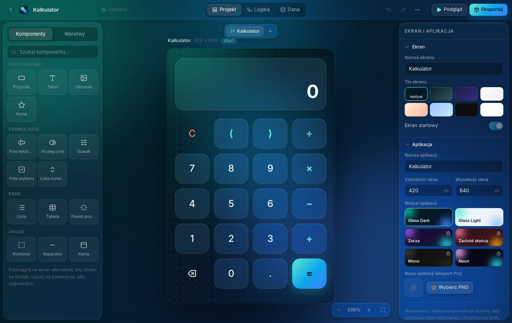
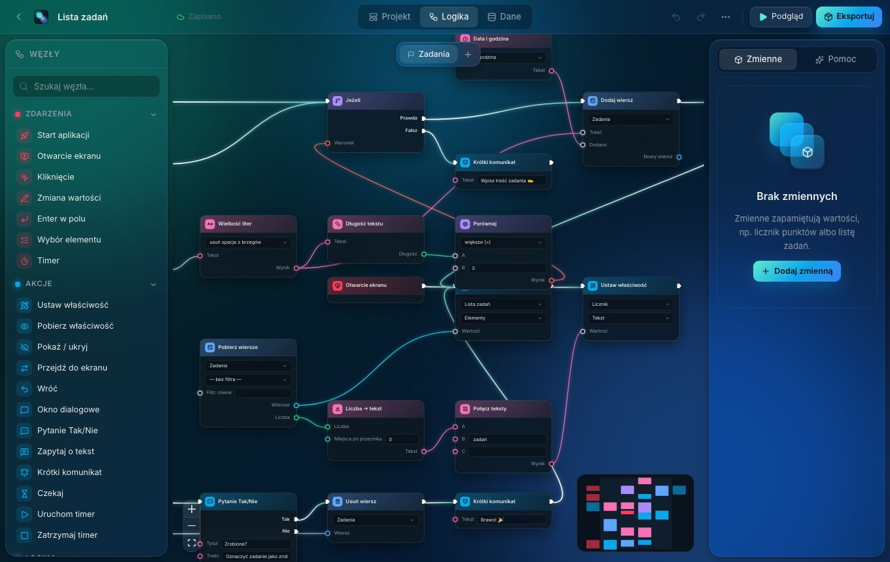
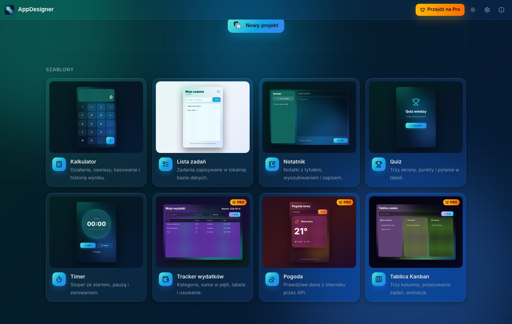

Twórz aplikacje bez kodowania
Ułóż ekrany z gotowych komponentów, połącz logikę kabelkami jak w Blueprintach i wyeksportuj prawdziwą aplikację desktopową – jednym kliknięciem.



Wszystko, czego potrzebujesz, żeby zbudować własną aplikację
Bez instalowania kompilatorów, bez pisania kodu – AppDesigner zrobi resztę.
Projektant ekranu
Przeciągasz przyciski, pola, listy, tabele i kontenery. Siatka, przyciąganie i linie pomocnicze dbają o porządek.
Logika z węzłów
Zdarzenia, warunki, pętle, zmienne i matematyka połączone kabelkami – czytelnie jak schemat.
Podgląd na żywo
Twoja aplikacja działa w osobnym oknie, a na kabelkach widać, którędy właśnie płyną dane.
Baza danych bez SQL
Tabele jak w Excelu – zadania, wydatki, notatki. Gotowa aplikacja zapamiętuje dane.
Efekt szkła i motywy
Nowoczesny wygląd od pierwszego kliknięcia: półprzezroczyste panele, gradienty, animacje.
Eksport aplikacji
Jedno kliknięcie i masz samodzielną aplikację .app, .exe lub AppImage – działa bez AppDesigner.
Od pomysłu do aplikacji w trzech krokach
Zacznij od pustego projektu albo jednego z ośmiu szablonów.
Ułóż ekran
Przeciągnij komponenty, ustaw kolory, czcionki i efekt szkła w panelu właściwości.
Połącz logikę
Kliknij komponent i wybierz „Pokaż logikę”. Łącz kafelki kabelkami – „po kliknięciu → policz → pokaż wynik”.
Wyeksportuj
Sprawdź wszystko w podglądzie ▶ i kliknij „Eksportuj”. Gotowe – możesz dać aplikację znajomym.
Szablony na start
Każdy szablon to działająca aplikacja, którą możesz dowolnie zmieniać i uczyć się na niej.
- Kalkulator z nawiasami i historią
- Lista zadań zapisywana w bazie
- Notatnik z wczytywaniem i zapisem
- Quiz z punktacją na trzech ekranach
- Timer – stoper ze startem i pauzą
- Pro: tracker wydatków, pogoda z internetu, tablica Kanban
Zacznij tworzyć w kilka minut
Jeden instalator dla wersji darmowej i Pro – Pro odblokujesz kluczem w aplikacji.
macOS
Intel i Apple Silicon (M1–M4) · macOS 11 lub nowszy
- Otwórz pobrany plik
.dmg. - Przeciągnij AppDesigner do folderu Aplikacje.
- Za pierwszym razem kliknij aplikację prawym przyciskiem → Otwórz → Otwórz (aplikacja nie jest jeszcze podpisana certyfikatem Apple). Później uruchamiasz ją normalnie.
Suma kontrolna SHA-256
cf91d912fabe26bd67617a0e624022ca556a1ade44dd790df27fcabd9ad7d02fWindows
Windows 10 i 11 · .msi / .exe
Linux
AppImage · .deb
Masz klucz Pro? Po instalacji otwórz Przejdź na Pro i wklej klucz – działa od razu.
Za darmo na start. Pro – raz i na zawsze.
Bez abonamentu. Płacisz jednorazowo, klucz licencyjny działa na 3 komputerach.
Darmowa
Wszystko, żeby zacząć i nauczyć się tworzenia aplikacji.
- Do 3 projektów
- Wszystkie podstawowe komponenty i węzły
- 5 szablonów
- Motywy Glass Dark i Glass Light
- Baza danych do 100 wierszy w tabeli
- Eksport na bieżący system ze znakiem „Made with AppDesigner”
- Węzły zaawansowane (HTTP/API, pliki, powiadomienia)
AppDesigner Pro
Pełnia możliwości dla twórców, którzy chcą więcej.
- Bez limitu projektów i wierszy w bazie
- Węzły zaawansowane: HTTP/API, pliki, powiadomienia, animacje, schowek, daty
- Wszystkie 8 szablonów i 6 motywów
- Eksport bez znaku wodnego, z własną nazwą i ikoną
- Aktywacja na 3 komputerach
- Darmowe aktualizacje wersji 1.x
Płatności obsługuje Lemon Squeezy (Merchant of Record) – karta, PayPal, Apple Pay i inne metody zależnie od kraju. Faktura i VAT rozliczane automatycznie.